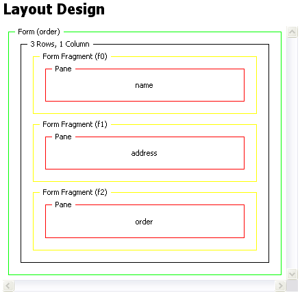

You can use form fragments to manage the display of forms that are too large to present on devices with small screens. MCS combines the results from each of the form fragments before the form's data is processed.
You create form fragments by inserting form fragments into the content of a form, either in rows or columns.

Form fragmentation and link labeling is controlled by using theme properties on form elements. See Form fragments links in XDIME 2 for further details.
The example shows class attributes on xf:group elements, each of which provides a potential point for fragmenting the form.
<?xml version="1.0" encoding="UTF-8"?>
<html xmlns="http://www.w3.org/2002/06/xhtml2"
xmlns:si="http://www.volantis.com/xmlns/2006/01/xdime2/si"
xmlns:xf="http://www.w3.org/2002/xforms">
<head>
<title>xf:group</title>
<style type="text/css" media="handheld,all">
.fragment { mcs-break-after: always; }
</style>
<xf:model id="login">
<xf:instance>
<si:instance>
<si:item name="firstName"/>
<si:item name="lastName"/>
</si:instance>
</xf:instance>
<xf:submission action="test.jsp" id="submit"/>
</xf:model>
</head>
<body>
<h4>Form Fragmentation</h4>
<xf:group class="fragment">
<xf:input model="login" ref="firstName">
<xf:label>Enter Your Name:</xf:label>
</xf:input>
</xf:group>
<xf:group class="fragment">
<xf:input model="login" ref="lastName">
<xf:label>Enter Your Surname:</xf:label>
</xf:input>
<xf:submit submission="submit">
<xf:label>Send</xf:label>
</xf:submit>
</xf:group>
</body>
</html>
Related topic
Canvas layouts and panes
Form fragments links in XDIME 2